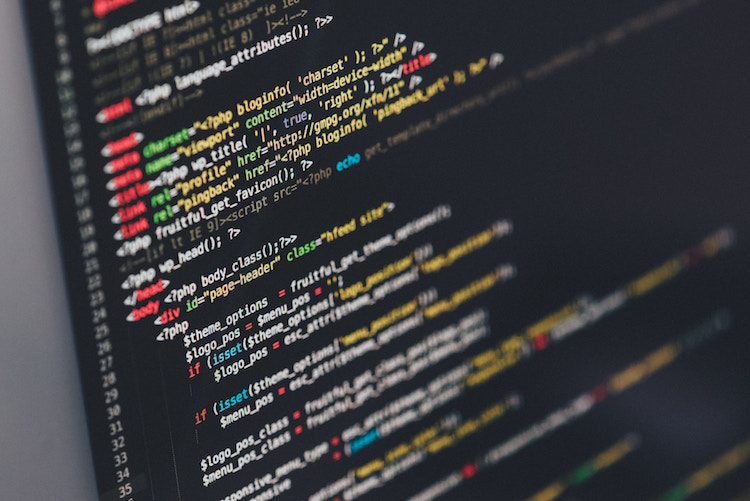

Nick's Website

Skills
I am pretty skilled at a lot of different, interesting things. I am pretty good at sports but the main one I play is Basketball. I have recently started boxing and Brazilian Jiu-Jitsu which have interested me for a while. I really enjoy playing video games because I have been playing them since I was about 2 and loved them ever since. I have recently started coding and I believe I am decent at it knowing I've done it for a little more than a month and a half. I am also pretty good at typing knowing that my highest WPM is about 86 and my average is around 65-70 depending on what I am typing. Last but not least, I am pretty good at math and always have been trying my hardest to get the best score I can get on my test.
Hobbies
I like to do a lot of things in my free time. I love to play sports like basketball, football, soccer, and baseball with my friends. I like to play video games with my friends also when it's a rainy day or if we get tired from playing sports. I love to spend time with my family like my Mom and my Dad and I love to run around and play with my dogs in the backyard.

Interests
I am interested in quite a few things, Math and Science are two of them. I have always liked these subjects since I thought they were easy to understand and also fun to do. I also like learning some history about the U.S.A. and wars that have happened and why they ha happend. Most importantly I love to use computers and phones or anything else that is a technology that I can use. There are millions of things to do with technology and coding is only one of them and I would love to learn a lot more than I already know.
Family
I was born in the year of 2003 and and I have lived with my Mom my whole entire life. I have to brothers that are both younger than myself but I don't get to see them much since they live in the state of Texas. My dad has been all over the place starting in California, moving to Texas, then moving back to California, then he left to live in Kansas for a little bit and finally coming back to California so I can see him more often.